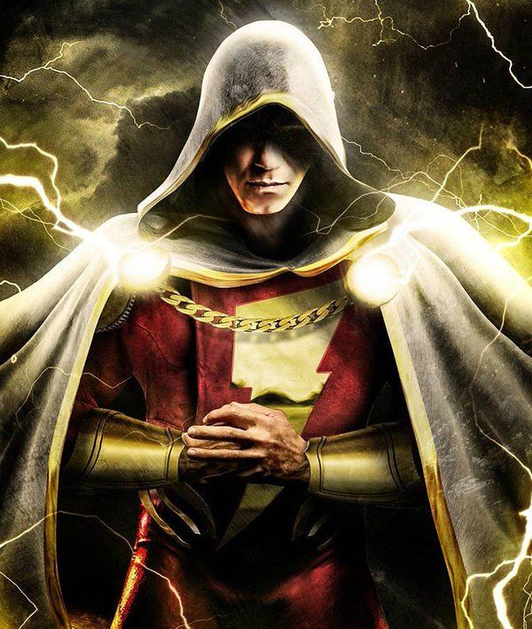

|  | BIOGRAFIA |
|---|---|
|
Billy Batson era um garoto órfão, comum e cheio de dificuldades, até ser escolhido pelo mago Shazam
para herdar um poder ancestral. Ao dizer a palavra “SHAZAM!”, Billy se transforma em um campeão mágico
com força divina. Usando esse poder, ele luta para proteger inocentes enquanto aprende a lidar com a
responsabilidade de ser um herói. Apesar da aparência adulta quando transformado,
Billy continua sendo um adolescente por dentro impulsivo, bondoso e com um grande coração. | |
| ARMAS | |
|
Punhos: Shazam luta com o próprio corpo aprimorado por poder divino. Seus punhos e força são suficientes para enfrentar deuses e monstros. "Shazam!": Ao pronunciar “SHAZAM”, ele recebe o poder de seis entidades: Salomão (sabedoria), Hércules (força), Atlas (resistência), Zeus (energia), Aquiles (coragem) e Mercúrio (velocidade). | |
| Habilidades | |
|
Força e Durabilidade Sobre-humanas: Pode levantar colinas, lutar contra deuses e resistir a ataques devastadores. Velocidade e Reflexos Divinos: Corre, voa e reage mais rápido que o som. Manipulação de Energia de Zeus: Pode lançar raios mágicos, absorver energia e usar eletricidade divina em combate. |